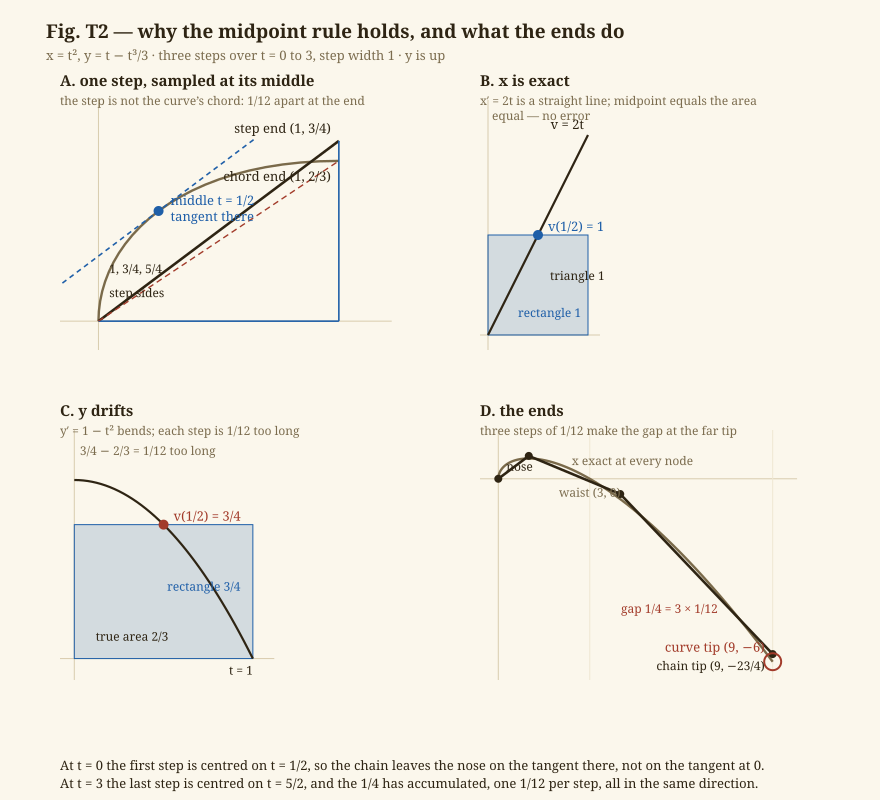

curve-lab · tph_tri_chain · sandbox
Integer hits on the Tschirnhausen cubic
Everything here is exact. No value is written as a decimal, because a decimal cannot tell you whether a point is on the lattice. Every comparison is at twelve triangles per side.
The hits, exactly
| t | x | y | arc length | note |
|---|---|---|---|---|
| 0 | 0 | 0 | 0 | nose |
| 3 | -6 | 9 | 12 | first hit |
| 6 | -66 | 36 | 78 | |
| 9 | -234 | 81 | 252 | |
| 12 | -564 | 144 | 588 | |
| 15 | -1110 | 225 | 1140 |
The grid exists to clear fractions
A fractional coordinate is not a problem to be ruled out. Choose a pitch that is a multiple of the denominators and the point lands on a whole cell. That is the entire purpose of the pitch: 144/25 of a unit is 2880 cells at pitch 500.
So the useful question is not whether the height is a whole number, but how coarse a pitch makes the point whole, and whether the chain's own sides are whole at that same pitch.
| stop t | x | y | the point, in cells | smallest pitch for the curve | smallest pitch for every chain side |
|---|---|---|---|---|---|
| 2 | -2/3 | 4 | (-2, 12) | 3 | 864 |
| 21/10 | -987/1000 | 441/100 | (-987, 4410) | 1000 | 256000 |
| 12/5 | -276/125 | 144/25 | (-276, 720) | 125 | 500 |
| 5/2 | -65/24 | 25/4 | (-65, 150) | 24 | 55296 |
| 3 | -6 | 9 | (-6, 9) | 1 | 256 |
| 24/5 | -4008/125 | 576/25 | (-4008, 2880) | 125 | 125 |
| 4 | -52/3 | 16 | (-52, 48) | 3 | 108 |
t = 3 needs no scaling at all. Every other stop is exact too, at a pitch equal to its denominators: 3 at t = 2 and t = 4, 24 at 5/2, 125 at 12/5, 1000 at 21/10. What singles out t = 3 is that it is the only stop exact in whole units. The chain needs a larger pitch than the curve at every stop, because each side has to be whole as well as each vertex.
Twelve triangles per side, both methods
| stop t | step width | pitch | midpoint chain tip x | gap | y exact? | straight joins tip | midpoint length | chordal length | exact length |
|---|---|---|---|---|---|---|---|---|---|
| 2 | 1/6 | 864 | -143/216 | 1/216 | yes | (-2/3, 4) | 1007/216 | (Σ√)/648 | 14/3 |
| 21/10 | 7/40 | 256000 | -2513/2560 | 343/64000 | yes | (-987/1000, 441/100) | 2653/512 | (Σ√)/192000 | 5187/1000 |
| 12/5 | 1/5 | 500 | -11/5 | 1/125 | yes | (-276/125, 144/25) | 7 | (Σ√)/375 | 876/125 |
| 5/2 | 5/24 | 55296 | -37315/13824 | 125/13824 | yes | (-65/24, 25/4) | 106435/13824 | (Σ√)/41472 | 185/24 |
| 3 | 1/4 | 256 | -383/64 | 1/64 | yes | (-6, 9) | 767/64 | (Σ√)/192 | 12 |
| 24/5 | 2/5 | 125 | -32 | 8/125 | yes | (-4008/125, 576/25) | 208/5 | (Σ√)/375 | 5208/125 |
| 4 | 1/3 | 108 | -467/27 | 1/27 | yes | (-52/3, 16) | 683/27 | (Σ√)/81 | 76/3 |
The chordal length is irrational, so it is written as an expression. At t = 3 it is (√2353 + √2977 + … + √197977)/192, twelve terms, denominator 192. The midpoint total at the same count is the fraction 767/64, because every side there is a whole-number triple.
At t = 3 the path of straight joins lands on the whole-number point exactly. The midpoint chain stops 1/64 short of it. The exchange is set out at the end of the page: exact positions, or exact lengths.
The twelve triangles at t = 3
Step width 1/4, pitch 256 cells per unit. Sides given both in cells and as reduced triples.
| step | middle t | dx | dy | ds | reduced triple |
|---|---|---|---|---|---|
| 1 | 1/8 | 63 | 16 | 65 | (63, 16, 65) |
| 2 | 3/8 | 55 | 48 | 73 | (55, 48, 73) |
| 3 | 5/8 | 39 | 80 | 89 | (39, 80, 89) |
| 4 | 7/8 | 15 | 112 | 113 | (15, 112, 113) |
| 5 | 9/8 | -17 | 144 | 145 | (-17, 144, 145) |
| 6 | 11/8 | -57 | 176 | 185 | (-57, 176, 185) |
| 7 | 13/8 | -105 | 208 | 233 | (-105, 208, 233) |
| 8 | 15/8 | -161 | 240 | 289 | (-161, 240, 289) |
| 9 | 17/8 | -225 | 272 | 353 | (-225, 272, 353) |
| 10 | 19/8 | -297 | 304 | 425 | (-297, 304, 425) |
| 11 | 21/8 | -377 | 336 | 505 | (-377, 336, 505) |
| 12 | 23/8 | -465 | 368 | 593 | (-465, 368, 593) |
The last vertex is (-383/64, 9) against the curve’s (−6, 9): short by 1/64 in x, exact in y.
The pitch, and where it comes from
The pitch is the number of cells per unit, and the grid is the whole integer lattice at that pitch — not a box fitted round the curve. It depends on the step width and nothing else. Write the step width as a fraction in lowest terms, call the bottom number q:
pitch = q³ pitch = 4 × q³ when the top number is odd
With the count fixed at twelve, the step width is t/12, so the stopping point alone decides the pitch. That is the whole of it.
| stop t | step width | pitch | curve tip, in cells | first step, in cells |
|---|---|---|---|---|
| 2 | 1/6 | 864 | (-576, 3456) | (143, 24, 145) |
| 21/10 | 7/40 | 256000 | (-252672, 1128960) | (44457, 7840, 45143) |
| 12/5 | 1/5 | 500 | (-1104, 2880) | (99, 20, 101) |
| 5/2 | 5/24 | 55296 | (-149760, 345600) | (11395, 2400, 11645) |
| 3 | 1/4 | 256 | (-1536, 2304) | (63, 16, 65) |
| 24/5 | 2/5 | 125 | (-4008, 2880) | (48, 20, 52) |
| 4 | 1/3 | 108 | (-1872, 1728) | (35, 12, 37) |
Worked example, twelve triangles out to t = 4. The step width is 4/12 = 1/3. The bottom number is 3, the top number is odd, so the pitch is 4 × 27 = 108. It is small because the step is coarse: twelve triangles across four units is a big step, and a big step has a small bottom number.
If the grid must be 3125. A power of five only arrives when the step width is 2/5 or 4/5, since 3125 is odd. At twelve triangles that means t = 24/5: the grid is 125, and 3125 is twenty-five of those, with 625 being five. The curve then runs to height 576/25 and fills only part of the grid.
Same count, t = 3. Step width 1/4, bottom number 4, pitch 4 × 64 = 256. The very first step is evaluated at t = 1/8, so its sides are (1 − 1/64)/4 × 256 = 63, then 2(1/8)/4 × 256 = 16, and (1 + 1/64)/4 × 256 = 65: the triple (63, 16, 65).
The glyph at t = 3, in whole units
| feature | value |
|---|---|
| nose | (0, 0) |
| waist | (0, 3), at t = ±√3 |
| tips | (−6, 9) and (6, 9) |
| body height | 3 |
| tail height | 6, exactly twice the body |
| arc length, one side | 12 |
| full length, both sides | 24 |

Why the method works, and what the ends do

One step. Cut the run into equal slices. In each slice, read the speed at the middle of the slice and multiply by the width of the slice. That gives one straight move, and its across and up parts come out as whole numbers of cells.
The height is exact. The upward speed is 2t, a straight line. Reading a straight line at the middle of a slice gives exactly its average over that slice, so every node lands on the curve's height exactly — panel B, where the rectangle and the triangle have the same area.
The sideways part drifts. The sideways speed is 1 − t², which bends. At the middle of the first slice it reads 3/4, while the true average over that slice is 2/3. So the move is 1/12 too long sideways, in every slice, always the same way — panel C. Three slices make 1/4.
The two ends. The first slice is read at its middle, t = 1/2, so the chain leaves the nose along the line there rather than along the line at the nose itself: it starts a hair off the curve. At the far end the 1/12s have added up, and the chain stops 1/4 short of −6, while the height is still exactly 9 — panel D. Nothing corrects it, because every step is wrong in the same direction.
What that buys. Every side is a whole number of cells: 63 across, 16 up, 65 along, and 63×63 + 16×16 = 65×65. A pen or a cutter can walk the path cell by cell and finish each move on a corner, and the lengths can be added up exactly on paper: 767/64 for one side, against 12 for the curve. Joining points on the curve instead puts the nodes exactly on it, but every join has a length like the square root of a number that is not a square, so the total is a sum of square roots and cannot be added up exactly. That is the steady advantage: no square roots anywhere in the chain.
Open questions
- Is the 1/64 visible in the figure at working size, and is that acceptable for an ornament line?
- Should the chain be snapped so its last vertex sits exactly on (−6, 9)? That breaks the pure midpoint rule.